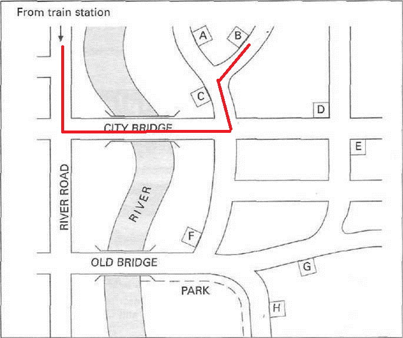
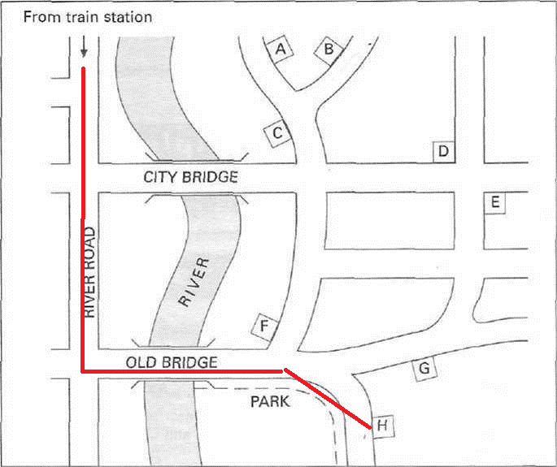
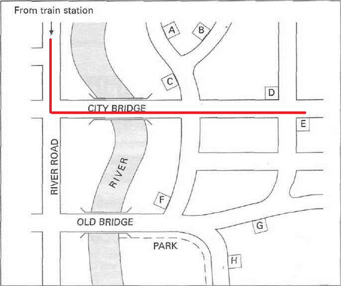

Note:
Man: Easylet. Good morning. How can I help you?
Woman: Hello. I saw your advertisement in the paper and I'm calling to ask about renting a flat.
Man: Certainly. What kind of flat had you in mind?
Woman: Well, er, I don't know exactly ... I mean, it depends on price, to some extent.
Man: OK, now we have properties across the whole range. The average is probably £120 a week.
Woman: Oh, I was hoping for something a little cheaper.
Man: They start at £90 that's the up to £200.
Woman: I could manage the lowest figure.
Man: An important question is how long you're thinking of staying in the property. We don't do short lets.
Woman: I'd want a flat for nine months, perhaps longer.
Man: That would be fine. Our contracts are for a standard six months, and that can be extended.
Woman: Fine. I'd need to come in and see you?
Man: Yes, our office is open from 9 am to 5 pm.
Woman: I'd need to come in on Saturday.
Man: OK, then we're here between 10 am and 4 pm. We also open on Sunday mornings, until 1 pm.
Woman: Saturday is fine. If possible. I'd like to see details of some properties first.
Man: We can post you a list. Or you may find it easier to look on the internet.
Woman: Oh, yes, I have the address here, thank you.
Man: What else would you like to know?
Woman: I wonder what I might need to buy for a flat. What's included in the rent?
Man: That depends on the flat, to a certain extent, although some things are standard in all flats. For example, every flat has kitchen equipment provided for your use.
Woman: Good. Does that also mean tableware, cups, glasses, plates?
Man: In some flats, but not all.
Woman: OK. And bathroom towels, sheets, and so on?
Man: I don't think any flats have those included.
Woman: I can easily buy some. I don't suppose flats come with a TV?
Man: In fact they all do - although they may not be the most modern models.
Woman: Oh, that's fine.
Man: But it's different with the telephone. That's up to you to organise. These days, most people seem just to use their mobile phone.
Woman: I can imagine. What extra charges would I get? Is heating extra?
Man: Yes, it is, but the water bill is part of the rent, so you don't have to pay for that.
Woman: Right, I've noted all that.
Man:Are you looking to move into a flat soon?
Woman: I hope so, yes.
Man: The thing is, we have a few flats at the moment that we'd like to get rented out by the end of the month.
Woman: I see.
Man:They're all good flats, and at the price you want. There's one in Eastern Towers, one in Granby Mansions and another in Busby Garden. All three are nice blocks of flats.
Woman: Could you tell me where they are? I’m at the train station at the moment.
Man: Eastern Towers, if you're coming from the station, isn't very far. Cross over City Bridge.

Then go left, and where the road divides, you want the right-hand fork. You'll see Eastern Towers on the left side of the road. It's a lovely building, with trees around it.
Woman: That sounds nice. What about Granby Mansions?
Man: The best way to get there from the station is probably to go down River Road and then cross over Old Bridge. The road bends to the right, round the park, and if you follow along, you'll find it there, on the left side. That's a great location, with lovely views of the park.

Note: You need to get the correct bridge, and then to recognise which road: the one that 'bends to the right, round the park'. The block of flats is on the 'left side'- you don't turn left.
Woman: Very nice. And you said there was one more?
Man: Busby Garden, yes. OK, from the station, cross over City Bridge, keep going through the first crossroads until you come to the second crossroads. Busby Garden will be facing you, over to the right side. It's very convenient for the shops.

Woman: Fine. Thank you. Well, I'll see you on Saturday.